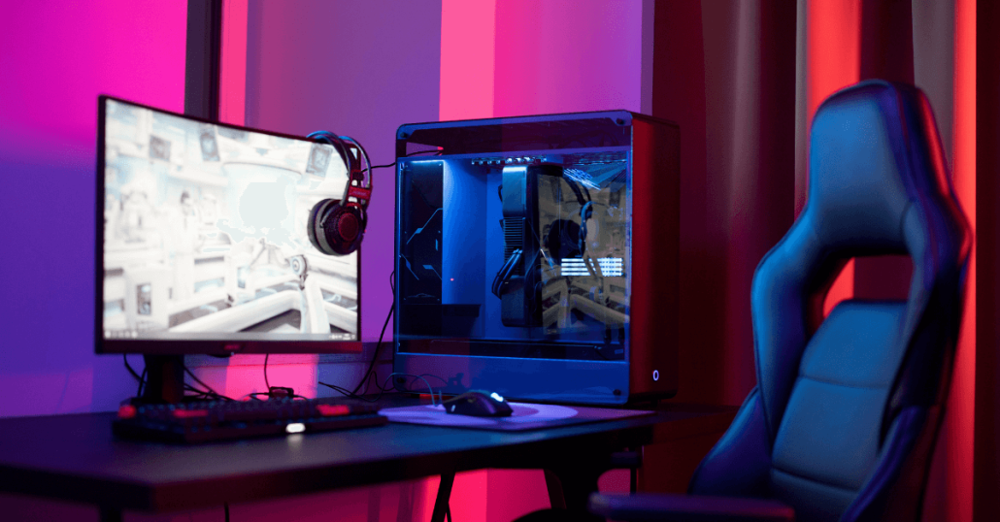

Componentes de un Sistema de Redes
Componentes de Hardware
- Nodos: Dispositivos como computadoras, impresoras o teléfonos que se conectan a la red.
- Placa: Tarjeta de red que permite la conexión física de un dispositivo a la red.
- Módem: Convierte señales digitales en analógicas y viceversa para la transmisión de datos.
- Router: Dirige el tráfico de la red y conecta diferentes redes.
- Switch: Conecta múltiples dispositivos dentro de una red, permitiendo su comunicación.
- Servidor: Proporciona recursos y servicios a otros dispositivos de la red.

Componentes de Software
- Aplicaciones: Programas para realizar tareas específicas.
- Sistemas Operativos: Gestionan recursos del sistema y proporcionan una interfaz entre el hardware y el usuario.
- Controladores: Permiten la comunicación entre el sistema operativo y los dispositivos de hardware.
- Herramientas de Desarrollo: Software para crear aplicaciones y programas.
- Bases de Datos: Almacenan, organizan y gestionan datos.
- Middleware: Facilita la comunicación entre aplicaciones distribuidas.
- Utilidades: Programas para la administración y optimización del sistema.